Why Mario Kart Wii?
Meet Hideki Konno
It's 2006, and Konno has already lived out many dreams. After being on the team for the N64 and SNES Mario Karts, he's been the lead of the series since Mario Kart DS.
And for good reason. After the Gamecube's disastrous sales - selling 22 million in its lifetime, less than half of their expected 4-year-sales mark - he was put in charge of designing the Nintendo DS (while also directing Mario Kart DS's development). Nintendo was not immune from Japan's economic collapse in the 90s, which bled until 2001, and its effect were still palpable. Nintendo's then-president Hiroshi Yamauchi once said: "If the DS succeeds, we will rise to heaven. But if it fails, we (Japan) will sink to hell."
Konno and Nintendo did not sink to hell.
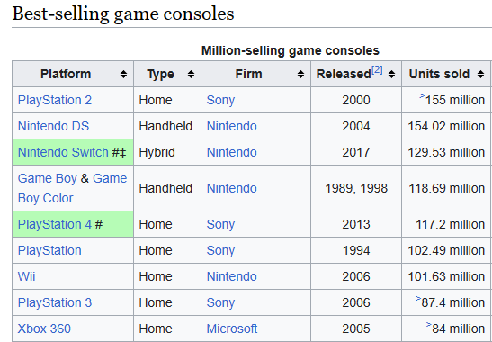Whether Nintendo thought they could be Mario Kart 64's 9.8 million sales or not is anyone's guess. They were just 2 years removed from selling 6 million units of their Gamecube title. But, yet again, Konno showed up.
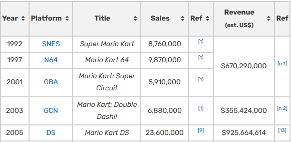At the end of the day, Konno is just a guy who's a dude. He's into cars and slightly competitive, though with the affect of a geek who wants you to enjoy the silly game he's made. He admits during Mario Kart 64's development:
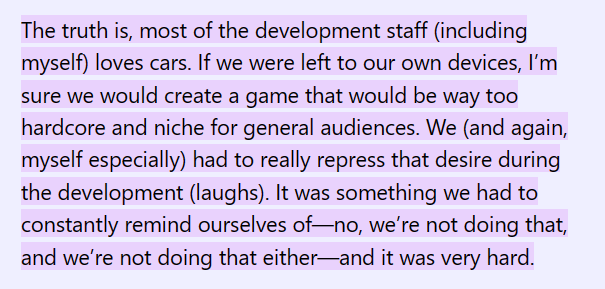In 2006, something has changed. The world's y2k moment might have produced worldwide economic instability. But it also brought us Tony Hawk and a worldwide fascination with action sports. Konno was not immune to it, going on the record for a love of BMX and snowboarding.
There are many Mario Karts. Each has its own style, distinction, feel. At large, the Wii version isn't beloved. For many, the iconic Mario Karts are found on the Nintendo 64, Super Nintendo, and the Gamecube. The Wii version, seemingly, fails to stand out beyond its gimmick of a motion-detecting Wii Wheel. But it's Konno's love for BMX that single-handedly delivers the only Mario Kart game ever, still, to feature inward drifting bikes. That choice is the first domino in a series of dominos changing the trajectory of how Mario Kart can be played forever.
Let's start with the basics
Here's the first recording of competitive play. What do you notice?
At first glance, the basics don't seem threatening. It's 12 players playing together online. They're using characters like Daisy, Luigi, and more. The first race is on the iconic and simple Luigi Circuit course.
Take a closer look though, and you'll notice:
- 6 players starting with [cB] in their name
- Only bikes, not karts, being used
- Each bike having a tighter, inward drift
Ignore the [cB] thing for now - we'll get to that. The bikes, however, are not a coincidence. They offer a control, precision, and speed of play never before seen in a Mario Kart.

That tight of a turn is simply not possible on karts. And notice the wheelie done before the turn. While activated, and assuming they don't get hit, a wheelie speeds faster than a kart. It all combines to make driving bikes in Mario Kart Wii a fresh and exhilerating experience individually. As it turns out, it's that level of control that's specifically needed for a game like Mario Kart Wii.
Physics
Besides the Wii Wheel, many people's memory of the game lies in one word: chaos. In-game physics were, indeed, noticeably different. The game felt... bouncy. Bumps from players could, depending on the characters used, send you flying. Collisions with obstacles result in wonky effects previously unseen.

It's also the first the time that races include 12 players, upped from 8 in Mario Kart DS. So there's a lot happening in a race - and being able to react more quickly, drift away from incoming shells or players, is all the more important.
Shortcuts, and How It's Never Really Over
The game releases on April 20, 2008. By April 22, bikes have taken over, being used in every course's world record. Online play is extremely popular - it's the first Nintendo TV console to feature international online play. By the end of it all, Mario Kart Wii becomes the highest selling Mario Kart to date, with over 37 million sales - a figure only beaten in 2019.
And when people start playing together, all on bikes, one thing becomes clear. This game was broken.


There are shortcuts galore in Mario Kart Wii. Shown above are some of the more dramatic options likely unintended by Kanno. But there's plenty of courses with large portions of sand and grass to cut through with mushroom boosts as well. It translates to an experience that means that even if you're losing badly after the first two laps, you can truly come back in ways that aren't experienced in other Mario Karts. The more complex and rewarding shortcuts are often higher-risk. The best players would be both able to execute consistently, and also understand when they should and shouldn't try doing a shortcut - say, when other players are nearby and could bump them off, or if they sense someone might use a lightning.
When Competitive Blows Up
Besides the X Games, something equally fundamental for the game is happening in the mid-2000s. Yes, players are enjoying playing the game individually. But there's also a big phenomena in gaming happening: Call of Duty.
In tandem with the rise of YouTube, some Call of Duty snipers grow in fame with a YouTube channel for their "clan", or a team. They were flashy, and clearly incredibly talented. They played together, and against other teams, and would frequently win.

Suddenly, everyone wanted to be on the big, bad team. The most followed and fear team. Even if you played on a family-oriented console for a Mario racing game, you were no exception to this.
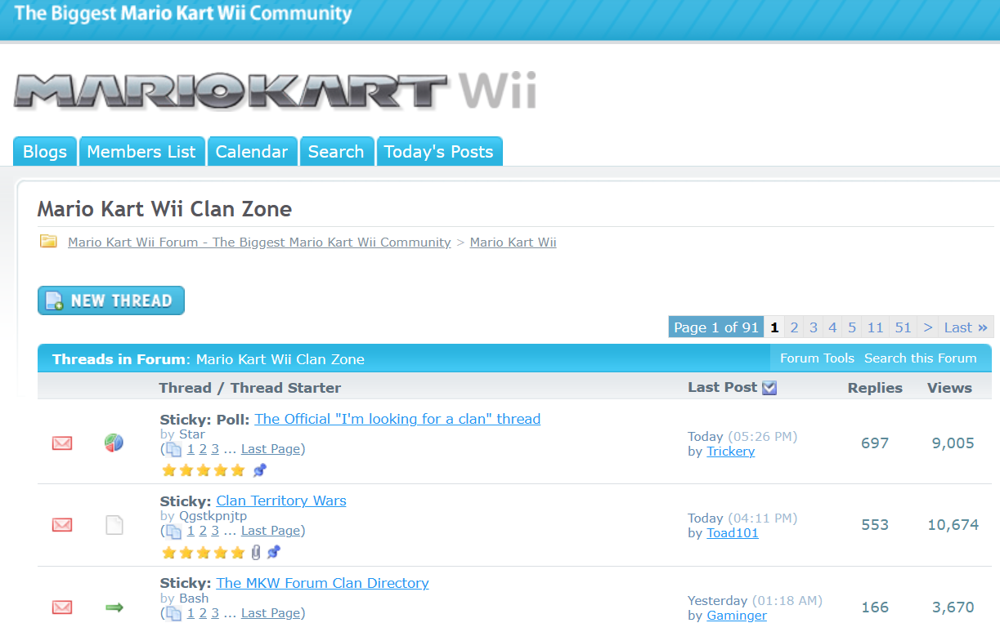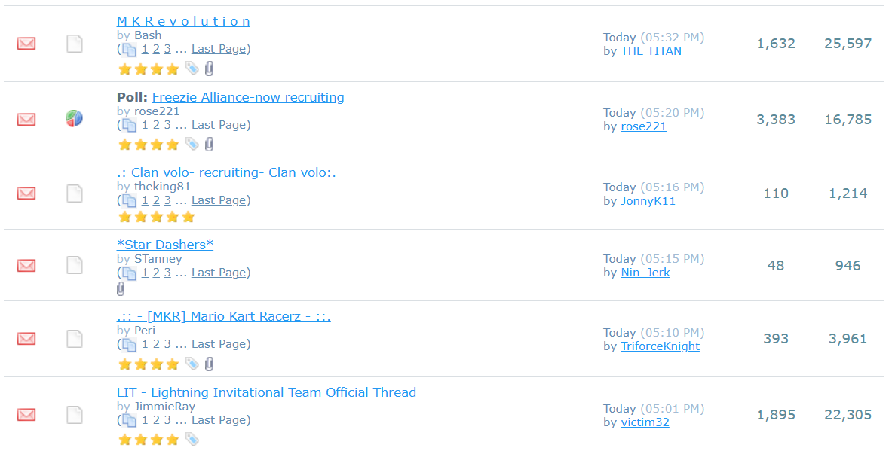It's true - competiive Mario Kart Wii actually became a teams game. One team plays against each other in a "clan war", with generally 5 players each side (though sometimes 6). The team with the most points after 12 races wins. Remember the earlier video, where there were 6 players in a room with [cB] in their name? That's a clan tag, identifying what team they represent.
It made sense when you thought about it. There's a need for coordinating items. There's a more precise level of control of your own movement to dodge items - and you could also call out obstacles for your teammates to avoid, especially if going for shortcuts. The energy of a match was infectuous, and frankly, addicting. Soon a competitive league was founded called the World Clan League, or WCL.
The World Clan League
The WCL was the first big structure in the competitive scene. The league was comprised of divisions; each having generally 6 teams, and all teams playing one match a week, playing each team twice. Divisions ran from from Division 1, the top division, to anywhere from Division 4 to Division 12.
For many, this was the peak of the game. It was by far the most traffic the game was getting, everyone shooting to become better and get closer to Division 1. And should they not, it gave teams and players an understanding of their skill level. It pushed players and teams to the limits of the game and how well players could play with each other.
Soon enough, top teams started emerging after the first seasons.
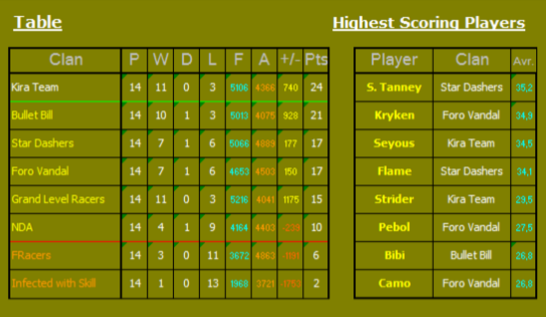And it was only possible in this environment - with everyone on bikes, with so much to coordinate, and playing with teams - that people began to understand the singular thing that sets Mario Kart Wii apart from the rest: the lightning.
Sandbagging
Sandbagging is based on the eventually-realized understanding that Mario Kart Wii has item probabilities based on one's position in the room, including:
- A limit on the number of instances an item can be held at once.
- A timer on when an item can first appear.
- The percentage change you can pull a given item, if possible, in your position.
For example: If you're in a 10 player room, you can get a Star from 7th to 10th place. Your best chance is in 8th or 9th, having a 27.5% chance, compared to 12.5% in 7th or 17.5% in last.
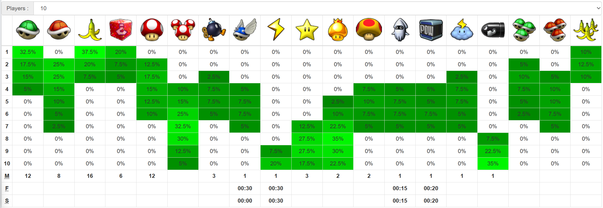Sandbagging is slowing down for a better chance at grabbing more powerful items - like stars, a mega Mushroom, bullet bills, golden mushrooms. These items either speed you up, grant invincibility, or give the ability to slow other racers down. Sandbagging can be used by all players at a given time. One might be in 4th place, and slow down for 7th as a shortcut nears, all for a better chance at mushrooms. Many knew that the lightning bolt in particular was only possible in bottom spots. But for the first year of the game, few knew it was just the bottom 2 spots.
The lightning is underscored becaused, as teams played together, they realized they could coordinate using it while their teammates where in invincible items, and could target players from the other team off the track with the lightning as well - say, when going over ramps or shortcuts.
It was only the top teams in WCL that started to pick up on this. Some teams started having a player regularly slowing down for last. And when the other team did too, teams realized something crucial: one player on each team needs to drive backwards.
Yes, drive backwards. Why? While the shock was possible in 9th, it was significantly less - 7.5%, compared to last place's 20%. Each "bagger" on both teams wanted that better possibility.
And so Mario Kart Wii became a game of different roles. Some racers tried being the best drivers in the front possible; some played in the middle to hold onto useful and more powerful items; and the bagger on each team drove backwards.
The Golden Era
Between 2009-2012, many teams fought sandbagging, only wishing to race. They ignored the reality that teams and players were beginning to slow down anyways after finding themselves knocked to last place in the opening 20 seconds of a clan war. With the lightning spawning at 30 seconds, they'd tried just slowing down for a few moments anyways. Sandbagging was the more honest version of this.
Still, many played and enjoyed competitive Mario Kart Wii, with or without bagging. With each team having 10+ players, and over 10 divisions in WCL, thousands of players played competitively.
There were soon 4 teams that vied for becoming the best team: Revolution, Infected with Skill, Koopa Clan, and All Stars. The former 3 would win titles, Revolution winning 4 in a row. All Stars - their clan tag being λ★ - were reknown in the community for their raw skill, having a roster of multiple world-record holding players with the best technique and racing lines. But they never won a Division 1 title. Far from it.
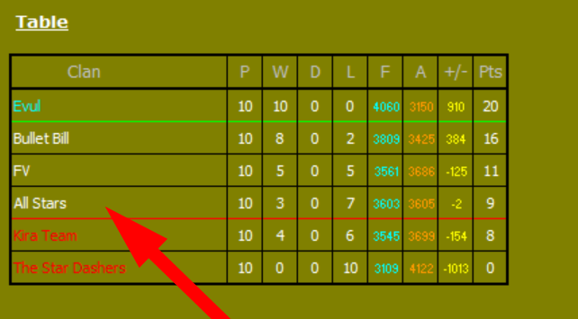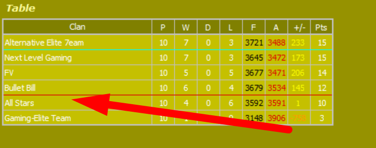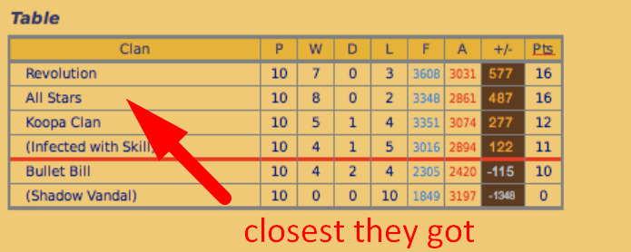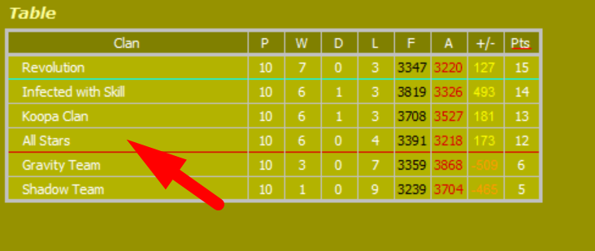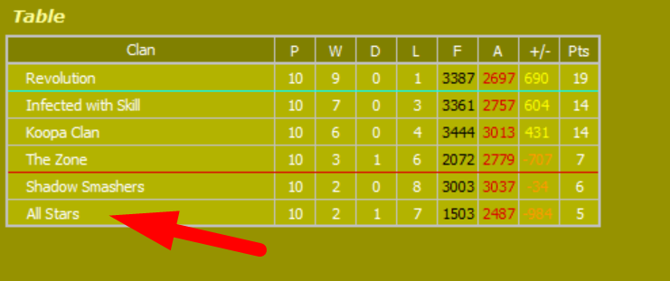This era would come to an end. After years of domination, Revolution would fold while on top in 2011. Infected with Skill and Koopa Clan would have their share at titles through 2014. And all the while, the community size started dwindling as other games came out, and the league failed to adapt to issues it was facing. When Nintendo announced the end of support for online servers in Mary 2014, many thought that would be it.
Revival and The Future
As Mario Kart 8 was scheduled to release on the Wii U in 2014, people were ecstatic for the next title. But many fans of Mario Kart Wii were disappointed. Many of the game's mechanics - shortcuts, physics, even the item structure - were gutted. Eventually, fans put together a server for players to be able to still compete on. The community would survive, as it seemed.
The community would also dwindle. The main competitive league, now the "Custom Server League", would start with only 2 divisions of 4 teams each. But as time went on, the community grew to enough size to still sustain itself - the league having 9 divisions in 2021.
In the present day, the future of the community is uncertain for many reasons. But one thing remains: people care about the game uniquely so in comparison to any other Mario Kart. And competitive teams play is one of the main driving forces behind that.
Today, the biggest competition is not around clans, but national teams instead. Every few years, the Mario Kart World Cup is ran. You can get a glimpse into the action below.